Photo coming
.22 LR$250–300
Taurus TX22
GunBroker top 10 · 2025Full-size 16+1 rimfire trainer with a good trigger for the money; a cheap way to practice the basics without centerfire ammo costs.
What should I buy?
A starting-point buying reference for new and entry-level owners: 194 guns across handguns, revolvers, PDWs, rifles, shotguns, surplus, and the used market, each with the cartridge it feeds on, a ballpark price, and a quick take. Every current-production model on GunBroker's 2025 top-selling handgun, rifle, and shotgun lists is included and marked. Filter by type, caliber, or price.
Read first. A plain-language starting point, not legal, safety, or investment advice. Prices are ballpark U.S. street ranges cross-checked against retailer and auction listings in late 2025 / early 2026, and they move constantly — AK and lever-gun prices in particular have climbed. Fit, intended use, and your local laws matter more than any list here. Always buy through a licensed dealer, follow all federal, state, and local law, and get hands-on training.
Full-size 16+1 rimfire trainer with a good trigger for the money; a cheap way to practice the basics without centerfire ammo costs.
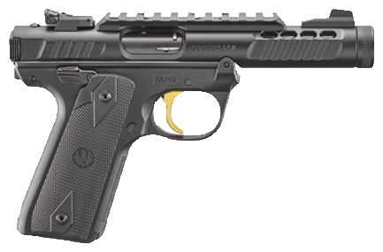
Target .22 with a 1911-style grip and one-button takedown; Guns & Ammo says you'd be hard pressed to find a better .22 for the money.
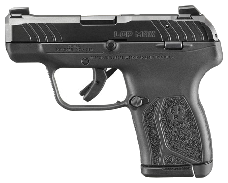
Tiny 10+1 pocket .380 at about 10 oz — reviewers call it the smallest gun that reliably holds that many rounds. Needs a tool to field-strip.
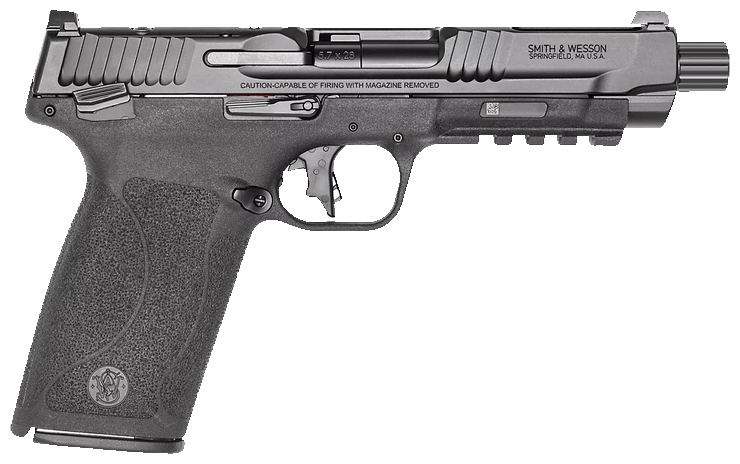
Usually the cheapest of the 5.7 pistols; Guns & Ammo called it the most comfortable 5.7 to shoot. High capacity, light recoil, thin aftermarket, pricey ammo.
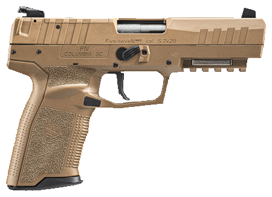
The original 5.7 pistol, now optics-ready — 20+1 of fast, flat-shooting ammo. Superb but the priciest 5.7, and the ammo is dear.
Compact 12+1 budget 9mm with a manual safety; plain sights and a long trigger, but it runs and costs less than most holsters for premium guns.
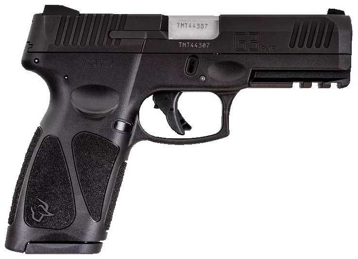
Full-size budget 9mm that undercuts almost everything; widely judged dependable for the money, with basic sights and trigger.
Slim single-stack-width Glock with 10+1; easy to conceal, mild to shoot, and takes standard Glock sights and parts.
Full-size 17+1 with an aggressive grip texture and interchangeable backstraps; a strong Glock alternative that often sells for less.
The best-selling carry pistol of the decade: micro-compact size with 10–12+1 capacity and good sights. Huge holster and magazine support.
Full-size, optics-ready, with an excellent trigger and lots of accessories in the box; Canik's value pick against Glock and SIG.
Full-size with a grip safety, high capacity, and a better trigger than the original XD; a long-running alternative to Glock.
Modular striker gun (the fire-control unit is the serialized part, so frames and slides swap sizes). Large aftermarket; the base of the Army's M17.
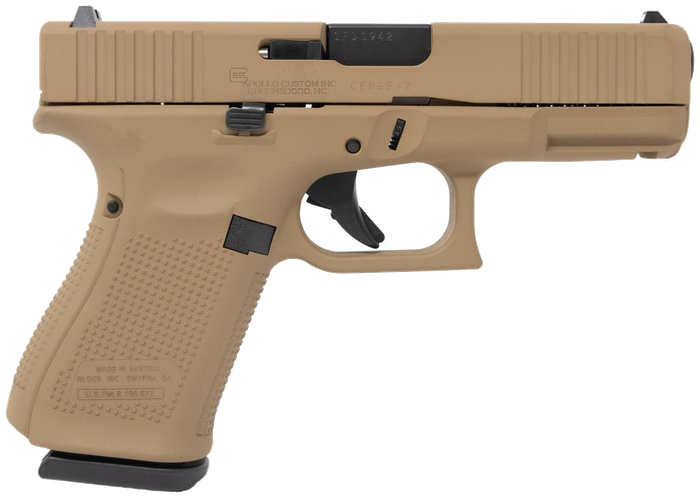
The benchmark 9mm — boringly reliable, holsters and parts everywhere. Weak factory sights are the usual gripe. (Canik's METE SFx is the value alternative near $525.)
Full-size 17+1 Glock: the same reliability as the G19 with a longer sight radius and more grip. Police standard for decades.
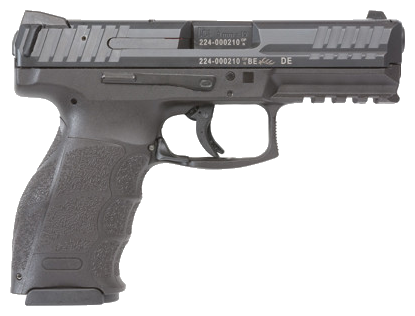
HK's striker gun with class-leading ergonomics and a paddle mag release; long praised for reliability and bright three-dot sights.
The classic all-steel-slide service pistol (the M9 for decades): smooth to shoot, heavy, with a DA/SA trigger and a slide-mounted decocker/safety.
HK's U.S.-made micro-compact carry gun introduced for 2025; optics-ready and built to compete with the P365.
Full-size DA/SA classic with a metal frame, famous with special operations units; heavy, soft-shooting, and very durable.
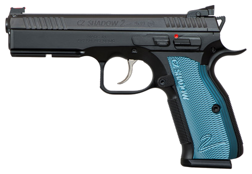
All-steel competition 9mm that soaks up recoil; a staple on the IPSC line. Heavy for carry, exceptional to shoot.
Full-size .40 with the M2.0 grip and trigger; .40 ammunition is often cheaper than it was when police used it widely.
The former police standard in .40 S&W; police trade-ins are common and cheap on the used market.
Full-size 15+1 in 10mm, the go-to for woods carry where large animals are a concern; stout recoil but very capable.
Full-size 13+1 .45 ACP Glock; soft push rather than snap, big grip.
A traditional 1911 with good sights and a crisp single-action trigger; 7–8 rounds, heavier, and needs a good magazine to run reliably.
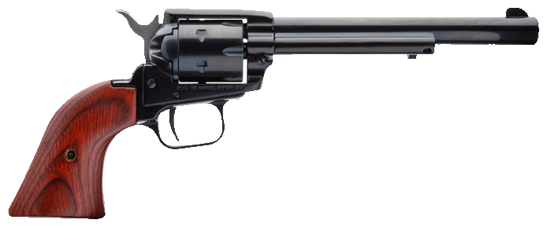
Dirt-cheap single-action .22 plinker. Not a defensive gun, but the lowest-cost way into revolvers and a fine trainer.
Single-action .22 rimfire in the Western style, built by Ruger at a budget price; a fun, durable plinker.
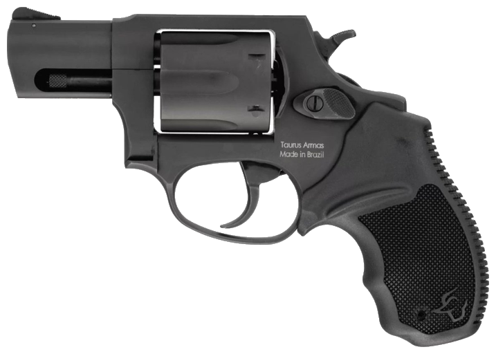
Six-shot .38 snub-nose, a budget alternative to the S&W J-frame; a common first carry revolver.
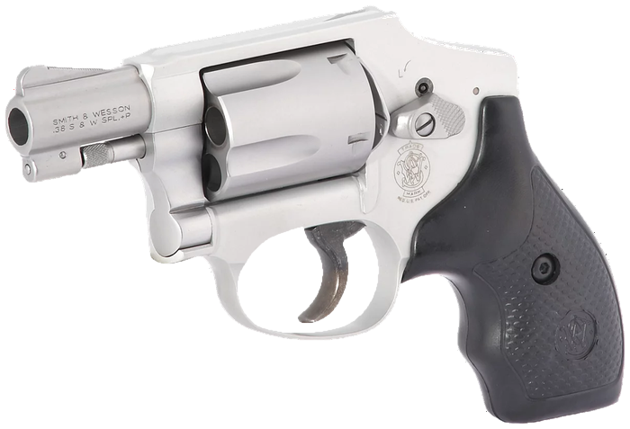
Hammerless Airweight J-frame rated for .38 +P; the classic snag-free pocket and backup revolver.
Reissue of the original J-frame Chiefs Special: five shots, all steel, blued, with the classic profile.
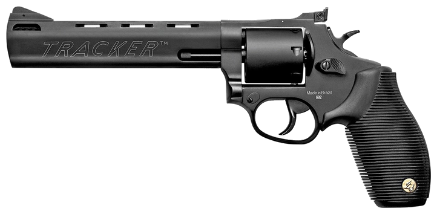
Seven-shot .357 with a swappable 9mm cylinder — a lot of versatility for the price.
Single-action .357 with adjustable sights and a transfer-bar safety, so it can be carried with six loaded. Nearly indestructible.
Small, heavy-built five-shot .357; the steel frame tames magnum recoil better than lightweight snubbies.
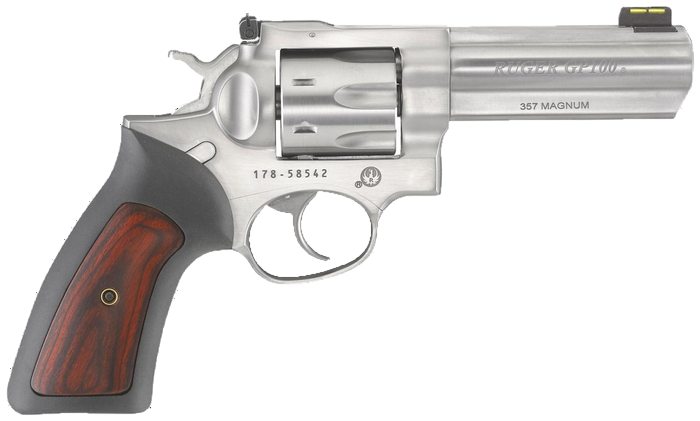
Tank-tough .357 built to digest full-power loads for life; heavier, but close to indestructible.
Colt's modern mid-size six-shot .357 in stainless; a lighter, cheaper sibling to the Python.
Reissue of the K-frame Combat Magnum, the classic police .357; balanced and handsome.
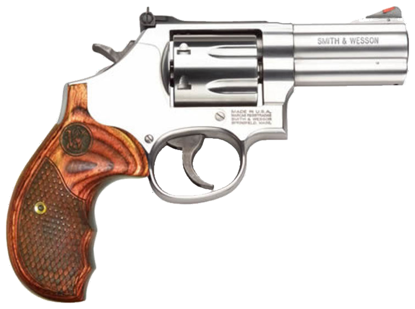
The reference .357 Magnum — L-frame, seven shots, the one most shooters measure others against.
The reissued Python (2020+): a tuned double-action trigger and the vent-rib profile; the most-sold revolver on GunBroker in 2025, new and used.
Big, ported, optics-ready hunting revolver; the weight and porting make .44 Magnum easy to shoot.
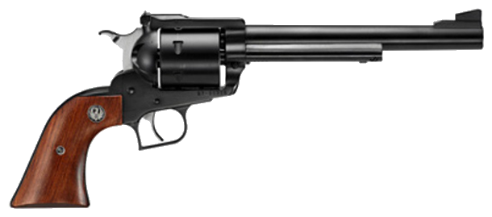
Single-action .44 Magnum for hunting and the range; classic Ruger strength at a fair price.
Heavy stainless double-action hunter with integral scope mounts; built to take the hottest loads.
The "Dirty Harry" N-frame in blued steel; the 29-2 is a collector favorite on the used market.
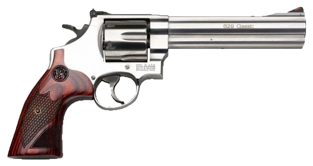
Stainless N-frame .44 Magnum; the serious handgun-hunting and big-bore standard.
Colt's reissued big-frame .44 Magnum on an enlarged Python-style frame; heavy, accurate, expensive.
Ruger's fixed-sight Western single action, modern steel and safety under a classic profile; a cowboy action shooting staple.
The original Peacemaker, still made by Colt: hand-fitted, traditional, and collectible. Load five, with the hammer down on an empty chamber.
Short carbines and pistol-format PDWs that fire handgun ammunition. Pistol versions often come with arm braces; ATF's 2023 brace rule was vacated in 2024, but rules on braces and short barrels change, so check federal and state law before buying.
Light 5.7 carbine that folds and shares magazines with Ruger's 57 pistol; tiny recoil, flat-shooting, but ammunition is pricey.
Ugly, heavy, and cheap, with a lifetime warranty that follows the gun; it runs, and it's often the cheapest legal carbine on the shelf.
Folds in half to about 16 inches for a backpack or vehicle and takes common pistol magazines (Glock and others); also made in .40.
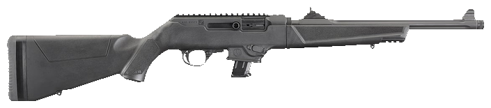
Takedown 9mm carbine that feeds Glock mags; soft-shooting and cheap to train with.
Folding pistol carbine that takes M&P magazines and stores spares in the stock; light and compact for a vehicle.
AK-style 9mm PDW that takes CZ Scorpion magazines; familiar AK controls and good value.
Roller-delayed 9mm PDW from HS Produkt (MP5-style operation) with a folding brace; well reviewed for the price and a 2025 GunBroker top seller.
The compact, refined update of the Scorpion EVO with a better trigger and controls; huge magazine and parts support.
Roller-delayed blowback PDW with a soft recoil impulse and Glock-magazine options; strong value among roller-delayed guns.
Short-stroke gas-piston 9mm with AR controls; the premium benchmark for 9mm PDWs, with a large accessory market.
The .40 version of Hi-Point's carbine; 10-round magazines and a big blowback bolt, but solid value.
AR-pattern PDW with CMMG's radial-delayed system, offered in 9mm, .40, 10mm, and .45; familiar AR controls.
.45 ACP carbine version; the slow, heavy round is quiet with a suppressor and gentle in a carbine.
Distinctive recoil-redirecting system that makes .45 ACP fire flat and fast; also made in 9mm and 10mm. Bulky and expensive.
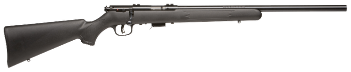
Accurate bolt-action .22 trainer with the AccuTrigger; the standard cheap rimfire for learning fundamentals.
Accurate, well-made rimfire with an adjustable trigger and swappable barrels; the step up from a budget .22 bolt gun.
Short, light, threaded-barrel bolt gun in .300 Blackout, 5.56 or 7.62×39 that takes AR or AK magazines; great with a suppressor.
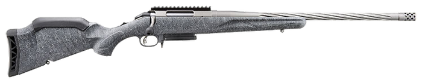
The current (Gen II) budget hunting bolt gun — threaded barrel with a muzzle brake, spiral-fluted bolt, and a trigger reviewers call outstanding for the price. Still the budget accuracy champ.
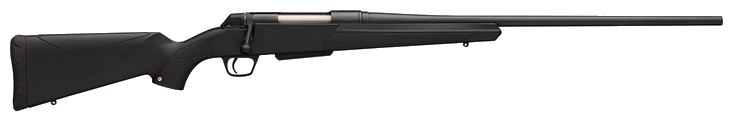
No-frills push-feed hunter known for out-of-box accuracy and a clean trigger.
The most-copied bolt action in America, now made by RemArms; the aftermarket for stocks, triggers, and scope bases is unmatched.
Ruger's controlled-feed, Mauser-style hunting rifle with integral scope bases; rugged and dependable.
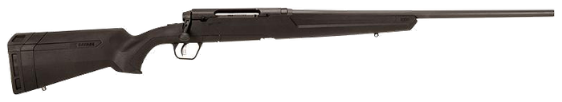
Entry hunting rifle with the AccuTrigger; 6.5 Creedmoor makes it an easy long-range starter.
Heavier-contour barrel and threaded muzzle on the American action; an accurate, affordable varmint and long-range starter.
Famously smooth bolt and an accuracy guarantee for a light hunting rifle; Tikka's T3x family is a top seller.
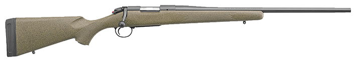
Spanish barrels with a strong accuracy reputation; a common step into precision shooting.
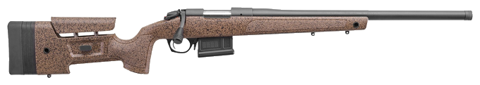
Mini-chassis stock and heavy barrel — a ready-made precision/PRS starter rifle.
Walnut and blued-steel version of the 700 with a hinged floorplate; a classic deer rifle, new or used.
"The rifleman's rifle": controlled-round feed and a three-position safety; the most-sold used rifle on GunBroker in 2025.
The upscale Model 70 with fancy walnut and fine finish; heirloom quality.
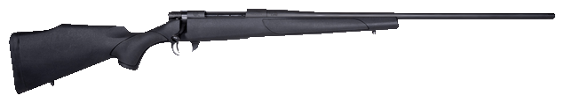
Backed by a sub-MOA guarantee; a proven, affordable magnum for elk and open country.
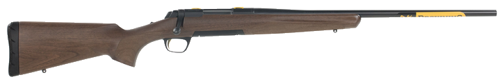
Refined action, crisp trigger, excellent fit; a lifetime magnum hunter.
Tube-fed .22 that has sold by the millions; accurate and cheap, slower to reload than a magazine gun.
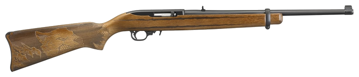
The default first rifle: cheap, reliable, endless aftermarket. Nearly everyone learns on one.
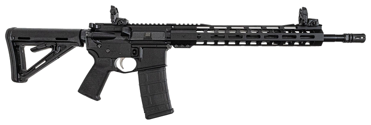
The go-to budget AR-15 — the gun that defined the cheap, functional 5.56; plain but reliable, and the easiest platform to learn and build on.
Dependable entry AR with a forged receiver and free-float handguard; easy to recommend as a first AR.
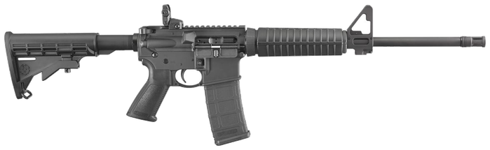
Reliable, no-frills AR-15 from a major maker; a safe first 5.56 that simply runs.
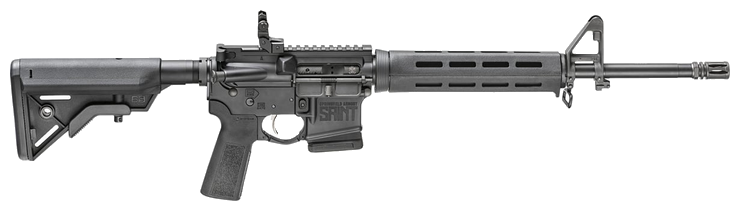
Mid-tier AR with better furniture and trigger; a well-rounded do-everything 5.56.
The civilian twin of the military M4 carbine, built to military specifications; the reference AR.
Garand-style action in 5.56: rugged, simple, and handy, with a ranch-rifle look that's less politically fraught than an AR.
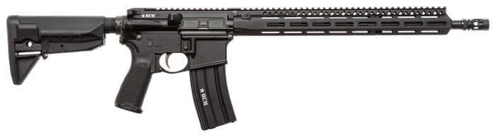
Duty-grade AR with a cold-hammer-forged barrel and real QC; what you buy when it has to work.
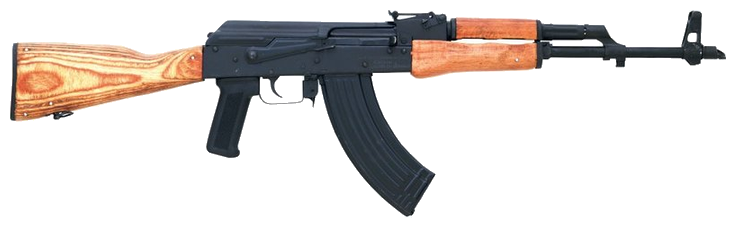
The classic imported Romanian AK; rated extremely reliable, accuracy merely okay — and prices have climbed a lot.
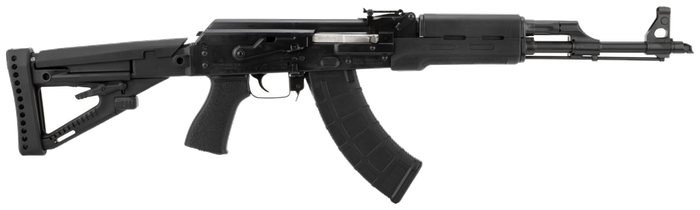
Heavy-duty Serbian AK with a bulged trunnion and chrome bore; widely called the best AK for the money.
A .308 semi-auto built on a small AR-15-size frame, so it's much lighter than a typical AR-10; adjustable gas.
Civilian M14: wood or synthetic stock, iron sights out to long range, and a heavy, durable action.
Short-stroke piston battle rifle used by special operations units; light for a .308, folding stock, and very expensive.
Semi-auto hunting rifle (not the military BAR) with a soft gas-operated recoil and fine walnut; a classic for driven and fast shots.
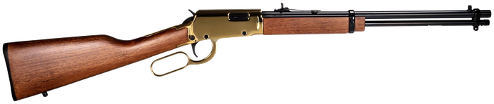
Budget .22 lever gun — a fun, cheap way to learn the manual of arms.
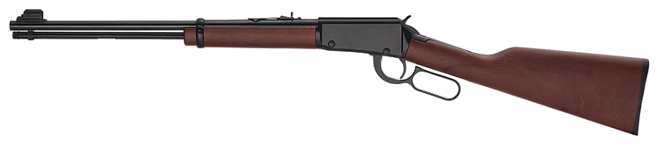
Smooth, well-finished .22 lever; a favorite youth trainer and plinker.
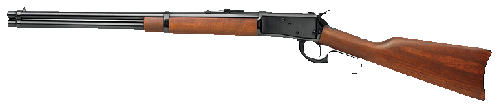
Brazilian copy of the Winchester 92; a handy carbine that shares ammo with a .357 revolver.
Henry's brass or steel lever gun in pistol calibers; heavy, smooth, and handsome. Pairs with a .357 revolver.
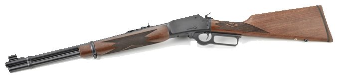
Ruger's revived .357 Marlin — fit and finish are back and better than the late Marlin-made guns.
Miroku-made reproduction of the classic 1892 in pistol calibers; light, slick, and beautifully made.
The same slick 92 action in .44 Magnum — a hard-hitting woods and trail carbine.
Magazine-fed lever gun that takes AR-15 magazines, in 5.56 or .300 Blackout; a modern hybrid for lever-only areas.
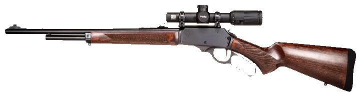
A Marlin-336-style .30-30 at roughly half the Marlin's price; reviewers praise its smooth action and finish.
The best-selling deer rifle in American history, back in production under Ruger; side ejection takes a scope easily.
The other legendary .30-30, now built by Miroku; a top seller both new and used.
Rack-and-pinion lever action with a detachable box magazine, so it handles pointed bullets and modern calibers.
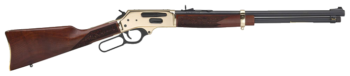
Side-gate .45-70 brush gun; stout, accurate, about seven pounds — a big-bore crowd-pleaser.
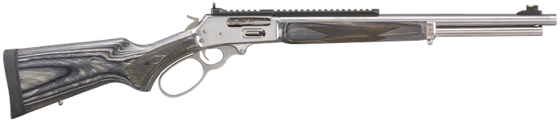
The reborn .45-70 guide gun; arguably the best lever being built today, with a price to match.
Short-barreled, big-bore 1895 with a thick loop lever; a brush and bear gun. Among GunBroker's 2025 top-selling rifles.
Stainless big-loop 1895 with a rail and ghost-ring sights; the most-sold lever action on GunBroker in 2025.
Folding single-shot .22 that weighs under 3 lb; a pack or tackle-box survival rifle.
Pump-action .22 in the classic shooting-gallery style; fun, handsome, and affordable.
Pump-action .22 with an octagon barrel and tube magazine; a classic small-game and plinking rifle.
Browning's premium pump .22 (the BPR) with fine walnut and bottom ejection; very smooth.
Falling-block single-shot reproduction in rimfire calibers; a beautiful precision small-game rifle.
Break-action single shot with interchangeable barrels; light, simple, and accurate. A good youth or straight-wall deer rifle.
Single-shot hunting rifle with a fast barrel swap and a threaded muzzle; popular in straight-wall-cartridge states.
Steel break-action with a walnut stock, made in many calibers; teaches making every shot count.
Single shot. A bare-bones break-action; the least expensive way to own a shotgun.
Single shot. Break-action with a simple build; turkey versions add sights and a rail.
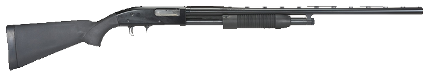
Mossberg's bargain pump — shares its guts with the 500 and just works. The cheapest serious shotgun.
Semi-auto. A Turkish-made budget semi-auto; fine for clays and hunting, but expect a break-in period.
Over/under. The budget O/U for clays and upland birds; solid but heavier and plainer than the premium names.
Pump. A polymer-and-steel pump with a 3½-inch chamber; a rugged duck and turkey gun.
Pump. A 14-inch-barrel "firearm" (not legally a shotgun) with a bird's-head grip; compact for a vehicle, hard to aim well. Check state law.
Single shot. A steel break-action with a walnut stock and interchangeable chokes; well finished.
Pump. The tactical 500 with an extended magazine tube; the most-sold new shotgun on GunBroker in 2025.
Side-by-side. The short double barrel from cowboy action shooting; simple and reliable home defense.
Side-by-side or over/under with rails and fiber-optic sight; a double built for defense.
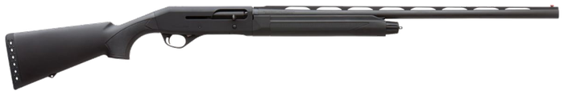
Benelli-inertia semi-auto on a budget; a solid waterfowl gun, occasionally picky with light target loads.
Over/under. Turkish-made by CZ's partner; a good-value field and clays gun.
Pump. Bottom-ejecting, so it's ambidextrous; a tang safety and smooth action. Long-running hunting pump.
Semi-auto. Mossberg's newer gas gun, offered in field and short "Aftershock" versions.
Side-by-side. Single selective trigger and color-case finish at a moderate price.
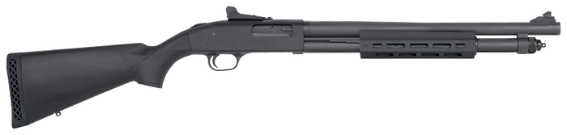
Heavy-barrel, metal-trigger-guard duty pump built to a military spec; a go-to defensive scattergun.
Pump. A bullpup with twin magazine tubes holding 14+ shells in a short package; complex manual of arms.
Pump. The blued-steel and walnut 870, made by RemArms; a top seller new and used.
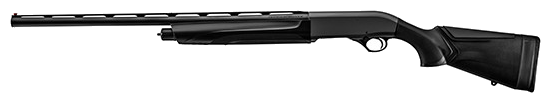
Reliable gas semi-auto with Beretta pedigree; soft-shooting and versatile for the money.
Over/under. Boxlock O/U with ejectors and a single selective trigger; good value in this class.
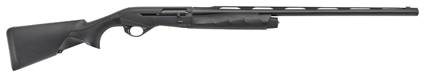
The benchmark inertia semi-auto — light, fast, and utterly reliable; a lifetime defensive/3-gun shotgun.
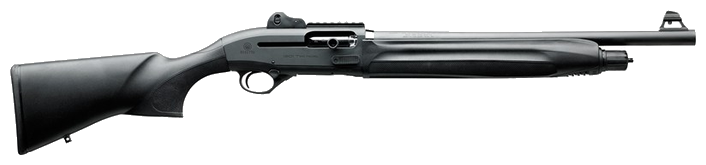
The gold-standard fighting shotgun: blazing-fast cycling, beloved by dedicated shotgun instructors.
Single shot. A dedicated trap gun with a high rib and adjustable comb options; a trap-line favorite.
Semi-auto. Beretta's flagship waterfowl gas gun with a kick-off recoil system; soft-shooting and reliable in foul weather.
Semi-auto. The modern A5 is recoil-operated (Kinematic Drive) with the humpback profile; light and fast.
Semi-auto. Inertia-driven 3½-inch waterfowl gun; the most-sold semi-auto shotgun on GunBroker in 2025.
Over/under. Low-profile receiver and a mechanical trigger; a sporting clays favorite.
Semi-auto. The gas-operated combat shotgun adopted by the U.S. Marines as the M1014; the benchmark tactical semi-auto.
Over/under. Low-profile Beretta O/U used for clays and birds worldwide; durable and elegant.
Over/under. The most-sold over/under on GunBroker in 2025 (the Citori family): a lower-profile receiver and excellent trigger.
Pump. A youth-size pump with a stock that grows with the shooter; gentle recoil for kids and smaller adults.
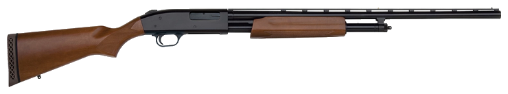
The ubiquitous pump: tang safety, millions sold. A 20-gauge makes an ideal first or youth gun.
Side-by-side. A traditional field double for upland birds.
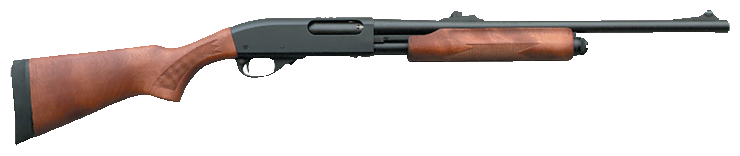
The classic American pump — smooth and tough, though post-move QC varies, so check the one you buy.
Side-by-side. Double triggers and a straight English stock; a handsome bird gun for the money.
Single shot. A folding .410 with a thumbhole stock that weighs under 4 lb; a tackle-box or truck gun. The most-sold single-shot shotgun on GunBroker in 2025.
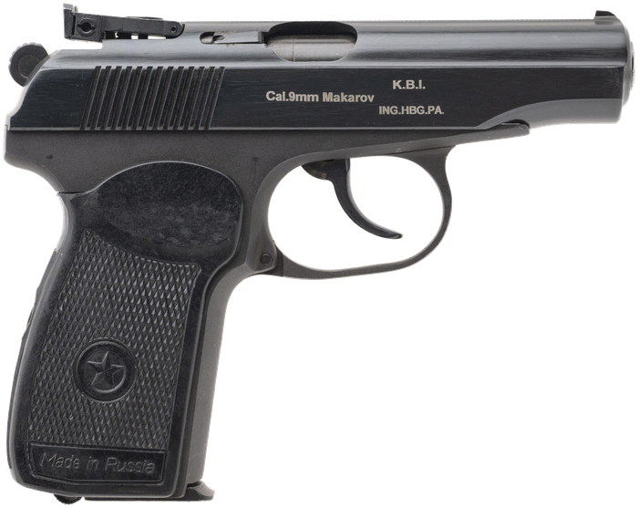
Simple, tough Soviet-bloc pistol in 9×18 Makarov; cheap, reliable, and a piece of Cold War history.
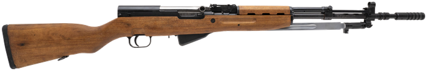
Semi-auto 7.62×39 with a fixed magazine; reliable and historic — Yugo/Russian prices have climbed sharply.
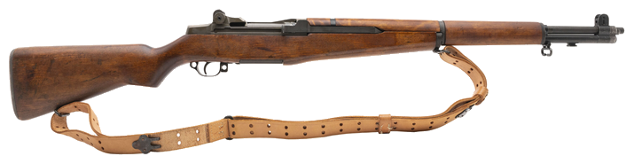
The WWII battle rifle in .30-06; the CMP still sells service-grade guns — “the greatest battle implement ever devised.”
The iconic 7.62×54R bolt rifle — crude but rugged. Prices keep rising as the surplus dries up.
Straight-pull 7.5×55 with famously fine accuracy and machining — the connoisseur's bargain milsurp.
Yugoslav Mauser in 8mm; a well-made, strong-actioned classic bolt-gun introduction.
Fast-cycling .303 with a 10-round magazine — the WWII British workhorse and still a great shooter.
Light, handy .30 Carbine; new Inland / Auto-Ordnance builds sit alongside pricier wartime originals.
Discontinued and vintage guns from GunBroker's 2025 top-selling used lists. Prices are rough ranges for decent shooting condition; collector grades, original boxes, and rare variants sell for much more. Have any used gun checked by a gunsmith.
Rifle. Millions made; a cheap, accurate tube-fed semi-auto .22.
Rifle. Polymer-stocked semi-auto .22 from 1959; quirky, durable, and collectible.
Handgun. Common on the used market; durable, with a grip safety.
Handgun. Police and military-style trade-ins of the 92 family; heavy, soft-shooting, and easy to service.
Handgun. Retired police .40 Glocks: holster-worn but mechanically sound, and some of the cheapest quality pistols available.
Revolver. The original Chiefs Special snubby; a collector and carry classic.
Revolver. Huge numbers made; old-model guns (pre-1973) should be carried with the hammer on an empty chamber.
Revolver. The classic K-frame Combat Magnum; pre-lock guns are prized.
Revolver. Original Pythons (1955–2005) are collector pieces; price depends heavily on finish, barrel, and condition.
Revolver. The 1970s-80s "Dirty Harry" era 29; values rise with condition and original box.
Revolver. Post-war Colt SAAs; first-generation guns are far more expensive.
Rifle. The classic lever .30-30; pre-1964 guns command more.
Rifle. Pre-2008 "JM" Marlins from North Haven are prized over the Remington-era guns.
Rifle. Hammerless lever action with a rotary magazine; an elegant classic.
Rifle. Semi-auto deer rifles; the 742 can wear and jam, so inspect the chamber and bolt.
Rifle. Military Mauser actions rebuilt as hunting rifles; quality varies with the gunsmith.
Rifle. Pump-action deer rifles; very fast follow-up shots. The 7600 is the most-sold pump rifle on GunBroker in 2025.
Rifle. The predecessor to the Hawkeye; plentiful and dependable.
Rifle or pistol. Break-action with interchangeable barrels across many calibers.
Rifle. Pre-2000s 700s are well regarded; have a gunsmith check the trigger, since older Remington triggers were covered by a retrofit program.
Rifle. Short bolt throw and good accuracy; replaced by the X-Bolt.
Shotgun, single shot. Millions made; simple and cheap.
Shotgun, single shot. A classic break-action from the Depression era onward.
Shotgun, side-by-side. An affordable American double; check that the action locks up tight.
Shotgun, pump. Older blued 870s are excellent buys.
Shotgun, semi-auto. The most-sold used shotgun on GunBroker in 2025; soft-shooting gas gun that needs O-ring and cleaning care.
Shotgun, semi-auto. The 1100's successor handling 3-inch shells.
Shotgun, pump. "The Perfect Repeater"; values swing widely with grade and condition.
Shotgun, pump. Exposed-hammer pump from the trenches of WWI to the duck marsh; check the action for wear.
Shotgun, over/under. Japanese-made classic O/U; durable and handsome.
Shotgun, semi-auto. The humpback long-recoil original (sold as the "Light Twelve" and others); Belgian guns command more.
Shotgun, over/under. American-made all-steel O/U; heavy but tough.
Shotgun, over/under. John Browning's last design, Belgian-made; grades range from field guns to works of art.
Vintage, collector, or variant models from the used and specialty lists; values vary too much by condition to give a fair range.
No matches. Try widening the filters.